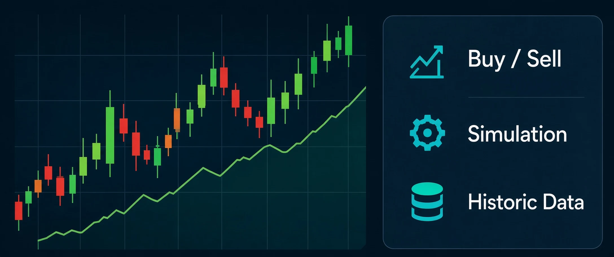
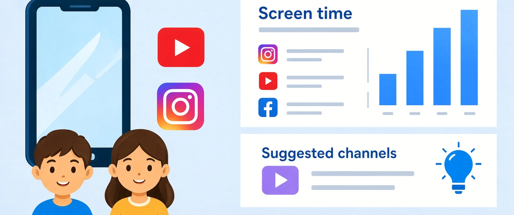

Shachar Adar
Automation and QA Expert
I build useful tools, automate the repetitive, and turn ideas into working solutions.
About
I build tools, then I QA them until they hold. This past year that meant working software, not demos. A job-search pipeline with two AI agents: one finds LinkedIn roles, the other tailors my CV and exports DOCX or PDF. Dayline tracks my kids' device activity, keeps the history, and uses AI to flag YouTube videos that don't fit their age. All-in replays buy-and-sell rules against real prices. One More Life is an incremental game built around reincarnation.
Grok, Grok bots in Cursor, and ChatGPT handle the repetitive pass. I keep the checkpoint. Nothing applies, messages, or sends on my behalf. The work is the automation—and the QA around every step.
If that is the kind of thing you need built, the projects are below.
Featured Projects
A collection of tools and experiments that solve real problems or explore new ideas.
Automated Job Search
Finds fitting LinkedIn jobs on a schedule, ranks them against my background, and generates a job-specific CV as a PDF.
View project →
One more life…
An incremental game that lets you get stronger with each death and reincarnation.
Play game
All-in
An application that simulates investment in a specific stock over time. It lets you specify a starting investment, sell and buy criteria, and then it simulates the investment based on historical stock behavior.
Run simulation
Dayline
It gets summarized information from Google Family Link and lets you know how much time each kid spent on their phone / tablet, which application they mostly used, and it compares the data to previous days. It also fetches YouTube watch history, suggests changes and new channels they might be interested in.
View project →